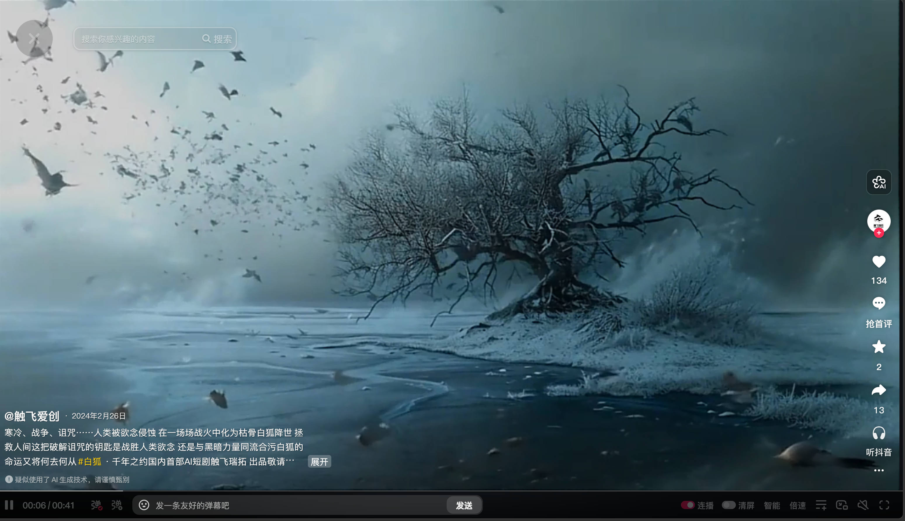
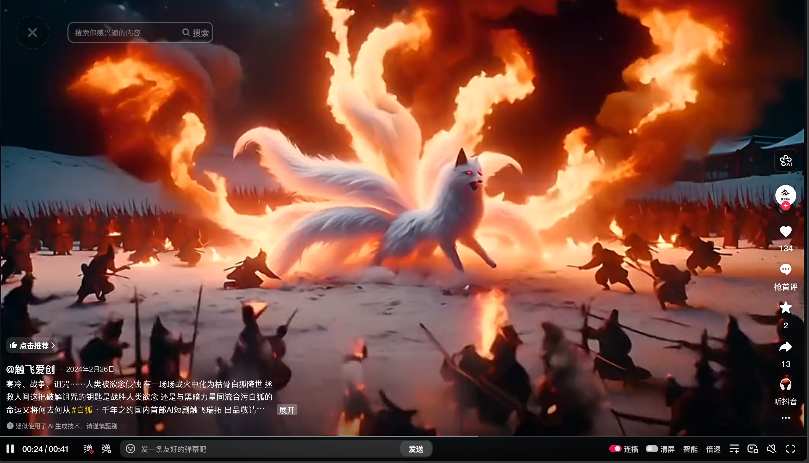
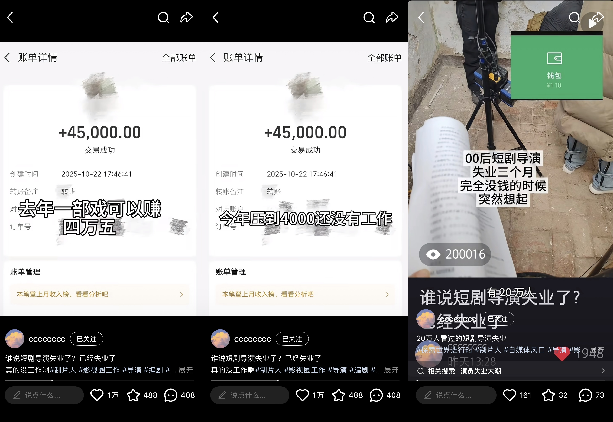

远端技术信号
OpenAI发布Sora，行业第一次看到“生成视频”对短剧生产链条的潜在冲击。
2024年初，中国的短剧行业正在往一千亿的市场规模上狂奔。那年中国电影票房425亿，微短剧已经是500亿，第一次超过了电影。2024 年2月16日，OpenAI 发布 Sora，发生在硅谷的事情似乎与远在中国的短剧没有关系，一个能生成60秒视频的模型对当时日产上千集短剧的生产链来说，像一个遥远的实验。
AI 短剧浪潮下的行业迁徙
当真人短剧的摄影棚渐渐空下来，另一端的 AI 流水线开始按小时筛人。一个千亿市场正在被新的生产方式重新切开，浪头还没有退去。
HOOK
2026年4月的一个上午，深圳坪山国际影视文化城。这是大湾区数字影视产业地标，深圳市微短剧产业协会的成立地。但此刻没有剧组。摄影棚门窗紧闭，周边的便利店和餐饮店门可罗雀。
同一个春天，在四川某AI短剧公司，闪闪入职的第二天就被裁了。她做剪辑，公司给这个岗位的标准是一小时出一条粗剪。她那天做到将近九点，交了三集。回家路上收到人事消息：“效率有点低，申请离职吧。”
这是一场迁徙。在它的两端，剧组在消失，AI流水线在按小时筛人。
2025年，中国真人微短剧市场规模突破千亿，是当年电影票房的近两倍。同一年下半年，行业的投流热力值开始连续三个月下滑。
2026年1月，全国重点微短剧备案量环比下降近50%；同月，AI短剧的单月播放量环比增长接近两倍。
这场迁徙还没有走完。但它已经开始改写一个产业和大量从业者的命运——他们大多数不在金字塔顶端，也不在最底端。
ACT I
2025年，中国真人微短剧的用户达6.96亿，占中国网民总数的近七成；人均单日使用时长129分钟，比长视频还高。《中国网络视听发展研究报告（2026）》显示，微短剧已成为网络视听“新大众文艺主阵地”的关键力量。
这个体量的行业,用了不到五年时间长出来：从2020年的草莽爆发,到2022年的政策规管,再到2024-2025年的产业化与平缓化发展。
数据来源：DataEye《2025短剧行业数据报告》（2023-2025）、市场公开报道（2020-2022）
2020年前后，短视频平台已经用几年时间完成了对用户的市场教育。短剧行业编辑陈出木认为，快节奏叙事、连刷式消费、强冲突反转，这几个文化产品的消费习惯已经深入人心。短剧借着这个基础，从 2020 年开始爆发。短剧把“复仇”、“霸总”、“打脸”、“逆袭”、“狗血”这些经典网文情绪拆成几十秒一集的高密度产品,通过平台精准投递到用户的手机屏幕上，让众多观众“停不下来”。
2020到2022年是野蛮生长期。大量小作坊式的制作公司涌入，内容质量良莠不齐。但也正是在这个阶段，短剧这种"短、平、快"的叙事形态完成了对用户日常碎片时间的占领。
2022 年起，国家广电总局开始介入，发布了规范短剧发展的通知，开始要求各级广电管理部门审核短剧内容，所有短剧上线前做好备案，平台承担主体责任。短剧被正式纳入监管体系。
到 2023 年底，广电披露累计下线微短剧 2.5 万部。至此，短剧正式进入规范化阶段。
2024到2025年，短剧进入产业化。DataEye2025短剧行业数据报告显示，2025年参与投流的微短剧超过19.2万部。头部制作方集中在陕西、河南、浙江三省，这三个地方几乎承包了全国大部分微短剧的制作产能。仅TOP100制作方就贡献了全行业60%的热力值。头部平台高度集中在番茄、河马、麦芽三家，三家占据了整个投流大盘的60%。
与此同时，地方资本开始跟进。青岛、重庆两江新区、西安西咸新区等地各自投入数亿元建设微短剧拍摄基地，单一基地的投资普遍是亿元级规模。全国至少10个省级地区将微短剧纳入文化产业扶持，从奖金、审核到政策服务一条龙。一个完整的产业链就此成型：上游有IP版权方和网文平台，中游有几万家承制公司、数十万从业者，下游有覆盖数亿用户的分发平台。
但在2025年下半年，这个看上去还在狂奔的行业出现了第一个减速信号。DataEye的数据显示，真人短剧的投流热力值从上半年的月均22亿降到了下半年的18亿，到12月已经跌到15.4亿，连续三个月下滑。行业研究者把这个拐点描述为"从爆发期进入存量竞争期"。免费短剧的扩张挤压了付费短剧的空间，而在免费这一端，真正跑得最快的已经不是真人剧了。
AI短剧的第一轮冲击还没有到。但风已经在变。
ACT II
OpenAI发布Sora，行业第一次看到“生成视频”对短剧生产链条的潜在冲击。
2024年初，中国的短剧行业正在往一千亿的市场规模上狂奔。那年中国电影票房425亿，微短剧已经是500亿，第一次超过了电影。2024 年2月16日，OpenAI 发布 Sora，发生在硅谷的事情似乎与远在中国的短剧没有关系，一个能生成60秒视频的模型对当时日产上千集短剧的生产链来说，像一个遥远的实验。
AI短剧上线，证明“全 AI 完整短剧”技术上可行，但质感仍待提升。
但行业内部有人已经在做功课。2024年2月26日，AI短剧《白狐》上线抖音——Sora发布的10天后。这是第一次有人用全AI的流程做一部完整连贯的短剧。制作人蔺志强后来在犀牛娱乐的专访中表示，“我们还没有把它按照一个完整的、真正意义上的商业化项目去进行发布和传播，目前只是探索从视频到剧集这一小步”。现在看来，《白狐》的画面质感相较粗糙，连贯性和一致性都有待提高，但它证明了一件事：技术上AI已经可以做出完整的短剧，只是还不好看。



1 / 1
制作方将其定义为探索性尝试，仅上传抖音平台，未进行商业化投放。（剧照来源:抖音@触飞爱创）
上线，AI 流程压缩团队规模与周期，被视为“AI短剧元年”起点。
AI短剧的真正起点出现在2025年2月。2月19日，AI短剧《兴安岭诡事》在风芒APP、抖音原生端与B站同步上线，成为抖音平台第一部完整的AI制作剧集。它的制作不再依赖传统片场，没有摄影棚、没有演员、没有布景，然而一支不到十人的团队把剧本、分镜、画面、配音全部压进AI工作流。11集内容，三个月做完。即便这部短剧在画面上仍不够流畅连贯，其成功的商业付费让业内把这个月称作"AI短剧元年"的起点。


1 / 3
不到十人的团队完成11集内容，三个月交付，生产范式从传统片场转向 AI 工作流。（剧照来源:哔哩哔哩）
播放破 2.2 亿，AI 短剧首次跑通规模化商业闭环。
之后六个月，是整个行业从“观望”到“下注”的半年。8月，AI漫剧《奶团太后宫心计》上线，累计播放突破2.2亿，投流规模达到千万量级。AI短剧第一次跑通了商业闭环，证明它不止能做出来，还能赚钱。
1 / 3
这一节点让“能做出来”升级为“能规模化赚钱”，商业判断由试验变为策略。（剧照来源: 爱奇艺）
播放破10亿，行业共识从“AI辅助”转向“AI本身”。
同年11月，《斩仙台下，我震惊了诸神！》播放量破10亿，进入现象级。到这个节点，行业共识已经完成：AI不是在辅助短剧，AI在成为短剧本身。
1 / 3
现象级播放强化平台与制作方资源倾斜，行业预期在短期内迅速统一。（剧照来源: 红果短剧）
Seedance2.0 / 激励政策 / 广电新规同月落地，迁移加速。
转折点在2026年1月同时从两端砸下来。
一端是生产端。字节跳动在这个月发布Seedance2.0，破解了此前AI视频一直过不去的几道坎：角色一致性、长视频生成、专业运镜、音画同步。此前一部AI短剧的制作里，"人物上一个镜头还坐着下一个镜头就站到了别处"这种硬伤开始消失。同月，抖音发布第二期AI短剧激励政策，单剧保底从最高30-120万大幅提升到90-360万，提高整整三倍。
另一端是监管端。2026年1月1日，国家广电总局《微短剧分类分层审核新规》正式施行。重点微短剧的备案门槛从100万提升至300万，普通微短剧从30万提升至100万，同时真人剧的合规成本翻了3倍。1月全国重点微短剧备案仅132部，环比下降近50%；3月继续收缩至97部。第一季度新增微短剧制作主体同比下降37%，头部团队的产出占比从去年底的42%升至58%。
技术在这头发力，政策在那头设卡，两股力量共同把中小制作方从真人端向AI端推。
抖音、红果、芒果、快手、B站、爱奇艺、腾讯视频在2025年底到2026年一季度集中上线了AI漫剧专区或红果漫剧、火龙漫剧等独立APP。2026年2月的剧查查统计里，AI生成内容的TOP50榜单上，AI真人短剧占了40多部。这一切都意味着生产的工作流本身在被AI重写。
陈出木透露，2025年还需要跨平台生图再生视频的分散流程，到2026年已经被一站式Agent取代。现在的流程是：把剧本整本丢进去，AI自动拆解场次、生成分镜图、合成视频、加配音，人类只在最后做精剪。
仅仅一年前，《兴安岭诡事》导演在海报新闻采访中还说过“AI目前还无法胜任剪辑和导演”。一年后，这两个岗位正以不同的方式被AI优化——剪辑变成"AI粗剪+人类精剪"，导演的某些决策权（分镜、运镜）正在被Seedance2.0这样的模型接管。
成本曲线也因此塌陷。春节档一部上线35小时播放破亿的AI短剧《西游，错把玉帝当亲爹》，制作成本是20人、10天、10万。三月初，5个人的创翎传媒团队用8天做出《万兽独尊》60集，上线4天破亿——比《兴安岭诡事》的11集3个月快了十倍以上。不到一个月后，同等规模的产品已经可以压缩到9个人、8天、5万。
数据来源：海报新闻、每日经济新闻报道。《兴安岭诡事》成本无公开数据，以"—"标注。
这是2026年春天AI短剧流水线的真实速度，用工人数减半、周期减半、成本减半，每个月都有下一轮优化。但在这条流水线上，具体的人正在被秒表重新丈量。
2026年4月，一位短剧制片畅儿在小红书上发了一条帖子，标题叫《谁说短剧导演失业了？已经失业了》。帖子有20万次浏览。视频里的旁白念着一行字：“去年一部戏4万5，今年压到4000还没有工作。”

那部4万5的戏在2025年10月开机，拍了10天。她2024年11月入行，满打满算，这是她短剧生涯里的第二年，也是AI短剧爆发的前几个月。一年后，真人短剧的价格跌到4000一部。她没接。四千也没有人要她。
在采访过程中跟她交流时，她说，年前身边的项目就停了。年后，她认识的一些导演和制片陆续转去了AI短剧那边，但做什么岗位、做得怎么样，她也不太清楚，“大家都没怎么联系了。”
用工减半、成本减半、周期减半，秒表在效率那头每月一次地加速。在另一头，活在真人剧场上的人正在一个接一个地从行业里消失。
ACT III
在AI流水线的另一侧，同样的筛选正在按小时进行。
“岗位就是在一直不停的筛选吧，就是不停的选择更便宜更好用的。”
闪闪在年初入职四川某AI短剧公司做剪辑，想赶上AI的时代红利。她的工作是把AI生成的素材拼成粗剪，修补人物站位、动作衔接这些AI还做不好的地方。短剧出品节奏紧张，为节省算力成本，团队通常不会让AI额外生成过渡用的空镜，所以圆这些逻辑漏洞的时间全落在她身上。
回家路上收到人事的辞退消息，她回了两个字：“ok。”第二天她去公司拿东西，工位上坐着新人。最近她又看到那家公司在招这个职位。闪闪的工位上坐上新人。但她不是被这条流水线筛掉的唯一一个，整个行业的用工规模都在大幅收缩。
1 / 1
“我年纪也不小了，肯定会被优化。我决定直接断臂求生。”
小王2024年在一家河南的短剧公司做后期。2025年底，他的公司宣布要“all in AI”，他想了一两个星期，辞职了。他自学转做编剧，给自己留的理由是一个赌注：AI永远取代不了编剧。
他对AI真人剧的判断基于恐怖谷效应，也承认有些数据需要继续核实。采访结束后没有找到他提到数据的原始来源，但另一件事却真实发生：2025年底他辞职的两个月后，广电新规施行，Seedance2.0发布，整个行业开始全面转向AI。小王没有等到优化名单上出现自己的名字。他自己走下了牌桌。
1 / 1
“以前是在沟通各方的嘛，但是现在就是你跟AI直接沟通对话就行了，所以制作人很多是被优化掉了。”
来自行业媒体“短剧自习室”的编辑陈出木对于目前短剧行业的人员流动有更宏观的视角。一个月时间，AI剧制作成本从20人10天10万缩窄到9人8天5万，人员规模以月为单位收缩。在AI的优化浪潮下，制作人存在的理由消失了。
除了制作人以外，群演受到的冲击也很大。她提到，以前大场面可能需要组织几百号人去演，现在完全可以用AI生成出来。在演员群体中，不只是群演，中腰部及以下的演员都面临着被AI优化的困境。
在2025年下半年，一条热搜短暂出现又消失——男二以下全换AI。
这场替代是有顺序的：先是零件，再是执行层，再是还没成名的演员。短剧金字塔的中段正在被掏空。而在这个逐渐空心的结构里，有些人决定在名单出现自己的名字前，先一步离开了。
有人在AI公司被裁，有人辞职自学编剧，有人发帖“已经失业了”，也有人看到横店和西安出现了不同程度的失业潮。
这是人这条线上的变化。那些人曾经站过的地方呢？
“被淘汰的不是真人短剧本身，而是靠跑量赚保底的低端剧组。”
2026 年 4 月，西安的爱克斯短剧制作焦卓透露，西安十里沛河微短剧影视基地的日均剧组数量从去年最红火时的20到40组，下降到今年的3到8组，高峰期也不过10组——四分之三的剧组消失了。
影视基地逐渐落寞的另一个侧面是租金：基地拍摄场地的租金从去年的每小时约400元，降到了现在的每小时150到200元，基地推出800元/天的套餐拉客。但焦卓认为，投资方并没有减少对真人短剧的投资，而是把资金更集中地投向能制作高质量内容的头部团队。
资金的流向比人和地的变化更快。
2026 年 1 月，抖音发布第二期 AI 短剧激励政策，单剧保底从最高30-120万大幅提升到 90-360万，三倍加码。同月红果批量暂停筹备中的真人短剧项目，取消保底分账。一位参与过红果合作的制作方在讨薪过程中在小红书发帖：“年前欠的尾款到现在没结。”回款链条从承制方断到外包方。
但简单地把这场转型描述为“资本全面转向 AI”是不准确的。
人在消失。地在转型。钱在换边。
但这场迁徙的红利到底流向了谁？
ACT IV
这场迁徙的账单，最终落在了谁的头上？在每一篇行业报告的叙事里，AI短剧是一场"技术平权"——工具变便宜了，个人创作者也能产出百万级爆款。明略科技2026年的行业报告给出了一个标志性的案例：“个人创作者沐心全环节单人产出2部亿级爆款短剧。”这种叙事的潜台词是：AI在把机会从大公司手里夺回来，还给普通人。
但DataEye的统计数字给出了另一个答案。2025年全年，中国94家微短剧平台的总热力值达243亿。其中头部三家，番茄、河马、麦芽，合计贡献了60%。TOP15平台拿走了90%以上。在制作方这一端，集中度同样显著：TOP100制作方贡献了全行业60%的热力值，TOP3的麦芽、西安匣子、重庆四月联盟稳居全年前三。2025年整整一年，红果日榜上最低上榜热度为5400万，而能突破1亿的短剧只有10部，而其中9部都来自同一家公司，听花岛。
技术门槛在降低，而市场门槛在抬高。
2026年1月施行的广电新规把重点微短剧备案成本从100万推到300万，普通微短剧从30万推到100万，真人剧的合规成本翻了3倍。这个门槛的设立，名义上是为了规范行业内容质量，实际上是把小作坊挡在了门外。
2026年第一季度，微短剧新增制作主体同比下降37%，而头部团队的产出占比从去年底的42%升到了58%。
换句话说：AI在降低技术门槛的同时，监管在抬高资本门槛。两头一起用力，把中腰部的承制方往外挤。
与此同时，一条完整的商业闭环正在头部平台内部形成。番茄小说提供IP、即梦AI提供生成工具、抖音负责分发、红果负责变现，这四个产品都在字节跳动旗下。截至2025年12月，红果短剧APP月活达到2.75亿，月分账金额超6亿元。同期，抖音的第二期AI短剧激励政策把单剧保底从最高120万提升到360万。一个从上游IP到下游变现的垂直闭环已经搭建完成。
从业者们对这个闭环的理解不完全一致。从真人短剧转编剧的小王认为，平台推AI的核心逻辑是承制方付费使用AI工具，原本付给真人岗位的钱流向了平台的工具订阅和算力消耗，承制方成了给平台的AI模型“喂饭”的人。对于他如何做出这个判断、有多少事实基础，他没能在采访中说明，但它至少代表了一部分离场者对这场转型的理解。
另一种视角则来自陈出木。她认为AI还没有真正闯入精品剧赛道，听花岛这样的头部制作公司目前仍然普遍采用真人生产；于正刚刚宣布要试水"真人+AI"结合的精品剧；贾樟柯用字节的Seedance2.0制作的实验短片《贾科长Dance》已经展现了AI在电影级质感上的可能性。在她看来，AI正在吃掉的是中间那一层，顶端有风格的导演和底部的爽文市场都还在。
中段被掏空。顶端与底端，暂时还在。
闪闪、畅儿、小王、陈出木观察到的制作人、群演们——他们都不在金字塔的顶端，也不在最底层。他们是中间那一层：有专业技能、靠经验吃饭、在野蛮生长期拿到了一点饭碗、但还没有建立起自己的品牌或话语权的那批人。
AI拿走的不是所有人的饭碗。它拿走的是中间那一层的。
ACT V
2026年春天，贾樟柯用字节跳动的Seedance2.0拍了一部短片，名叫《贾科长Dance》。AI生成的画面里依然能认出他标志性的运镜和选景。这可能是第一次，一个有风格的作者在AI工具里保住了自己的表达。爱奇艺创始人龚宇在《每日经济新闻》中预测，AI生成的爆款长片最快会在这个夏天出现。
在流水线的另一端，闪闪在被裁之后说，“AI肯定会快速迭代。它会迅速的贴合适应使用者的使用需求。”她相信未来是AI来适应人。畅儿在4月18日的帖子下一条一条回复同行的留言。小王在自学编剧。他说他赌AI永远取代不了编剧，“当然也不排除取代了，但如果真那样，那这个行业也不再需要真人了，我就毫无遗憾地转行。”
坪山的摄影棚还空着，临潼的AI片场刚开始建。西安还有人在讨薪，出海承制方的真人拍摄器材已经被卖掉了。下一部爆款AI短剧正在某个9人的小团队里被压缩到8天完成。
短剧只是第一波。贾樟柯的短片背后，是电影。龚宇的预测背后，是整个影视工业。当一个行业可以在5万元、8天、9个人的条件下产出一集播放过亿的内容，整个文娱工业的成本结构就被改写了。
闪闪说，AI会变得越来越聪明。
但变得越来越聪明的AI，会留给人类创作者什么位置，现在还没有人知道答案。